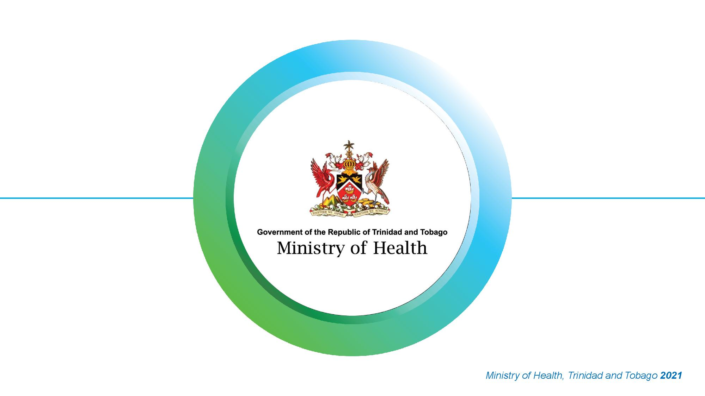

Summary This website created by Justin Boodram student id:00078473 and Zidane Davis student id:00078284 is about the Ministry of Health. This website shows useful/important information about the different hospitials' locations in Trinidad and Tobago, it also shows you information on what procedures can be paid for by the Ministry of Health of Trinidad and Tobago, there is also a testimonials page which shows user experiences on this site, a page displaying our contact information and you can also register an account for this site.
